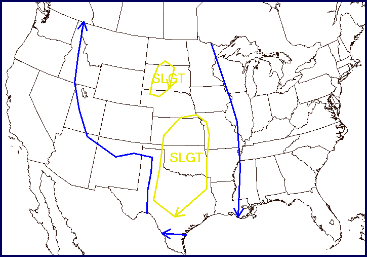
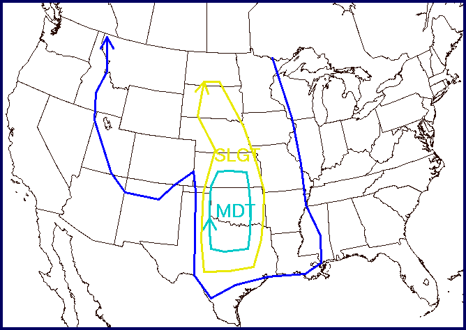
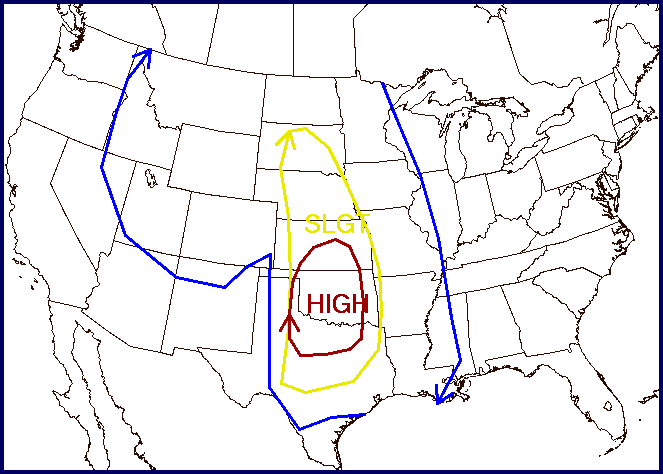
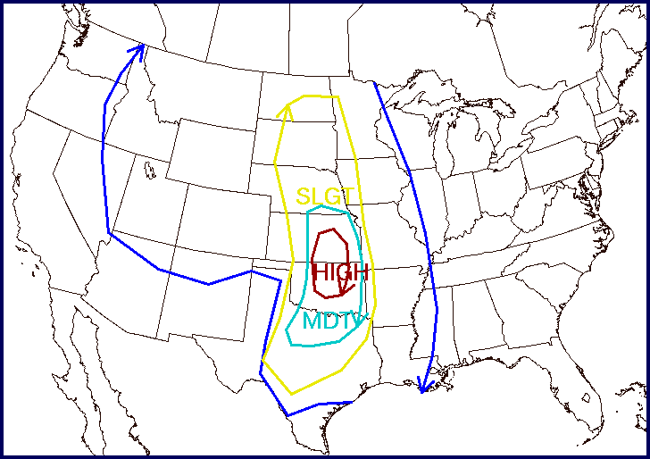
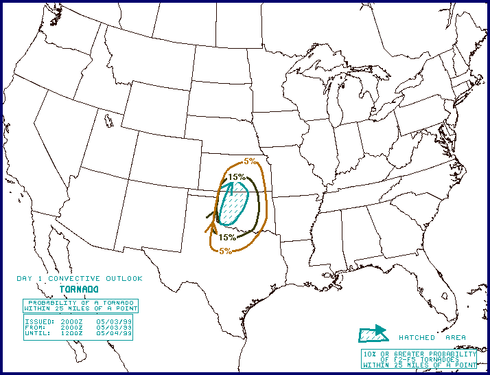
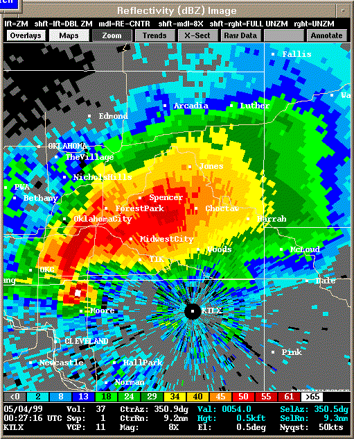
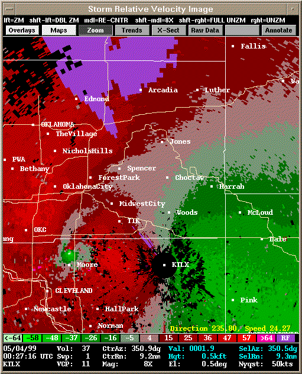
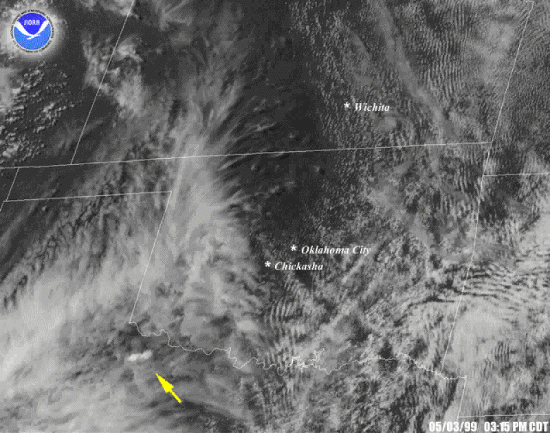

1999 Moore Tornado:
Deaths: 36
Injuries: 583
Max Wind: 301 mph (484 km/h)
Damages: $1.6 billion
Time on Ground: 85 minutes
Width: 0.8 miles (1.3 km)
This shows a general idea of the speed, damage, and formation of the tornado. The 300+ mph winds made 36 people lose their lives while 583 more got injured. Also, this 0.8 mile
wide tornado lasted around 1.5 hours causing about $1.6 billion in damages. All homes in the path of this moster were completly leveled.

* Started out as a cone tornado
* Progressively became a wedge tornado
* Wind speeds caused most casualties
* Slower moving tornado

May 3rd 1999 Outlook at 0600 UTC

May 3rd 1999 Outlook at 1630 UTC (Notice the addition of the Moderate Risk)

May 3rd, 1999 Outlook at 2000 UTC (High Risk is now in place over the moderate risk)

May 4th, 1999 Outlook at 0100 UTC (Moderate risk has returned with a smaller high-risk area situated over Kansas and Northern Oklahoma as supercells move across the state)

May 3rd 1999 Tornado outlook issued at 2000 UTC

Reflectivity image of the F5 Tornado taken at 0027 UTC on May 4th (Debris Ball is visible in the hook)

Velocity image of the F5 Tornado taken at 0027 UTC on May 4th (Velocity couplet is visible)
